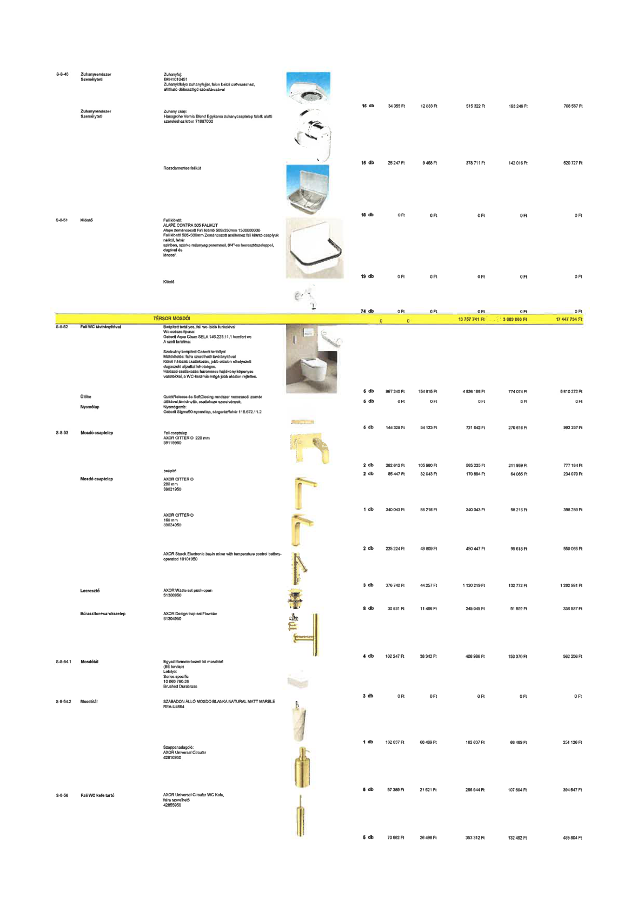

| Tétel | Menny. | Egys. | Anyag e.ár (net HUF) | Díj e.ár (net HUF) | Anyag összesen (net HUF) | Díj összesen (net HUF) | Anyag+Díj összesen (net HUF) |
|---|---|---|---|---|---|---|---|
| S-8-48 Zuhanyrendszer Személyzeti (Zuhanyfej) | 15.0 | db | 34 355 | 12 883 | 515 322 | 193 246 | 708 567 |
| Zuhanyrendszer Személyzeti (Zuhany csap) | 15.0 | db | 25 247 | 9 468 | 378 711 | 142 016 | 520 727 |
| Rozsdamentes falikút | 18.0 | db | 0 | 0 | 0 | 0 | 0 |
| S-8-51 Kiöntő (Fali kiöntő) | 19.0 | db | 0 | 0 | 0 | 0 | 0 |
| Kiöntő (Közfal) | 74.0 | db | 0 | 0 | 0 | 0 | 0 |
| TÉRSOR MOSDÓI | NaN | NaN | 0 | 0 | 13 787 741 | 3 689 993 | 17 447 734 |
| S-8-52 Fali WC távirányítóval | 5.0 | db | 967 240 | 154 815 | 4 836 198 | 774 074 | 5 610 272 |
| Ülőke | 5.0 | db | 0 | 0 | 0 | 0 | 0 |
| Nyomólap | 5.0 | db | 144 328 | 54 123 | 721 642 | 270 616 | 992 257 |
| S-8-53 Mosdó csaptelep (Fali csaptelep) | 2.0 | db | 282 612 | 105 980 | 565 225 | 211 959 | 777 184 |
| Mosdó csaptelep (beépítő) | 2.0 | db | 85 447 | 32 043 | 170 894 | 64 085 | 234 979 |
| AXOR CITTERIO 280 mm | 1.0 | db | 340 043 | 58 216 | 340 043 | 58 216 | 398 259 |
| AXOR CITTERIO 160 mm | 2.0 | db | 225 224 | 49 809 | 450 447 | 99 618 | 550 065 |
| AXOR Starck Electronic basin mixer | 3.0 | db | 376 740 | 44 257 | 1 130 219 | 132 772 | 1 262 991 |
| Leeresztő | 8.0 | db | 30 631 | 11 486 | 245 045 | 91 892 | 336 937 |
| Bűraszifon+sarokszelep | 4.0 | db | 102 247 | 38 342 | 408 986 | 153 370 | 562 356 |
| S-8-54.1 Mosdótál (Egyedi formatervezett) | 3.0 | db | 0 | 0 | 0 | 0 | 0 |
| S-8-54.2 Mosdótál (SZABADON ÁLLÓ) | 1.0 | db | 182 637 | 68 489 | 182 637 | 68 489 | 251 126 |
| Szappanadagoló | 5.0 | db | 57 389 | 21 521 | 286 944 | 107 604 | 394 547 |
| S-8-56 Fali WC kefe tartó | 5.0 | db | 70 662 | 26 498 | 353 312 | 132 492 | 485 804 |
